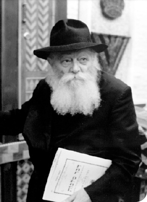
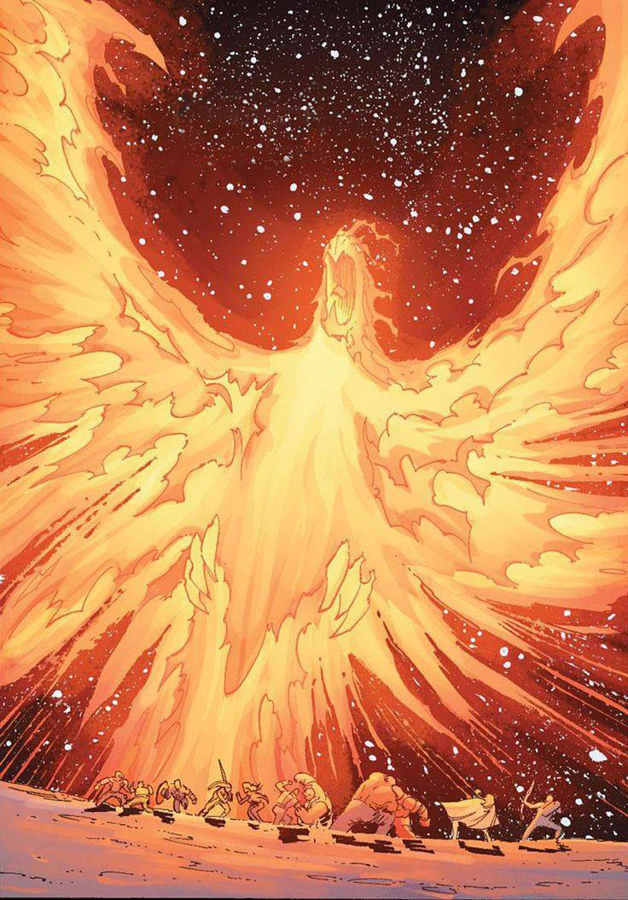
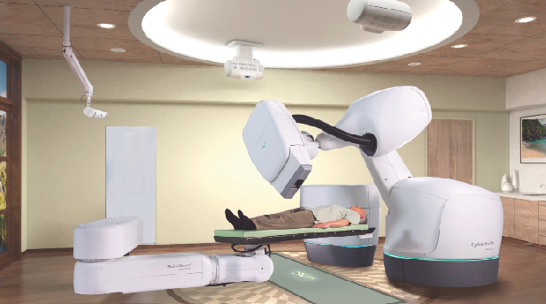

This week · Parshas Lech Lecha · Shabbos 13 Cheshvan 5787
France in Crisis
Light in France
On the evening of Simchas Torah 5734, the Rebbe taught the tune of “La Marseillaise” to the words of HaAderes VeHaEmunah. On Shabbos Parshas Vayeishev 5752, he opened his farbrengen with words of welcome to a group of Jews from France.
- The Rebbe’s French RevolutionChabad.org · Mordechai Lightstone · October 2023 ↗The Rebbe in Paris in the 1930s. Photo: Kehot Publication Society
- 5752The Spiritual French Revolution: A Miracle in Our Times, 5752 (1992)Chabad.org · The Rebbe · Sichos in English ↗
- Eiffel Tower Menorah Brightens Paris, as Worldwide Chanukah Celebrations BeginChabad.org · December 2015 ↗Photo: Thierry Guez
- 2015Menorahs in France to Shed Light During State of EmergencyChabad.org · Faygie Levy Holt · December 2015 ↗
New writing

WE WILL DANCE AGAIN
Elazar Yair Wilensky, 13, a ninth-grader at the ORT Ma'alot yeshiva high school, spent Monday afternoon on a school hike along the Ramim Ridge, above the Lebanese border. His group walked…
17 October 2026 · Moshiach 101
More for this week
Do I need to pay a Mohel?
A collection of halachos regarding the Mitzva of Bris Milah –first presented in this week’s parsha, from AskTheRav.com & Halacha2Go.com.
Shleimus HaAretzThe War of Disengagement
The tremendous pain associated with the deadly missile attack on Nachlat Har Chabad is twofold. There is the great pain over the tragic loss of life (may G-d avenge their blood), and there is equal pain over the fact that all this could have been prevented if they would have heeded the warnings of t · Military operations in the Gaza Strip had only just begun when a collection of gentle souls began harassing the political hierarchy about the absolute need to speak with Hamas.

The Beauty of the Righteous
According to the first interpretation, Avrohom never knew of Sara’s beauty until they approached Egypt. According to the second interpretation, Avrohom had known – not only as they approached Egypt but – “a long time” prior to then…
Parshas Lech LechaAbraham the [Eved] Ivri and Moshiach
Abraham’s nephew, Lot, was taken captive by an alliance of four kings who were battling another alliance of five kings.

Firebrand
Now Beis Moshiach is fresh, provocative – and yes, shocking at times. · No longer do we rest on the laurels of “heralding” the redemption. Beis Moshiach is bringing to the fore compelling ideas that are more daring and relevant than ever.
Parshas Lech LechaFreedom of Expression in the Era of Redemption
The Jewish people have been known by many names. Among them we can find Israel and Yehudi. But the first name used by the Torah is Ivri -Hebrew. Each name signifies a specific trait and virtue. Israel describes our mastery over other forces. Yehudi describes our recognition of, and gratitude to, G-d. But what does the name Ivri signify?
The week’s question
From the archive
Why Does the Rebbe Oppose Autonomy?
“If they have to evacuate an outpost, they shouldn’t do it on Shabbos,” said Jewish Home chairman Naftali Bennett. In other words, he essentially has no problem with the fact that they’re destroying other Jewish homes, just as long as they don’t do any work on Shabbos. These politicians have totally · Recently, an Israeli politician was a guest on one of the public affairs television programs for a pre-election interview. The host introduced him, and then proceeded to make an analysis of the political map in Eretz Yisroel today.

How Deadly Cruise Missiles Became the Lifesaving “CyberKnife”
Radiation and radioactive materials have been used in medical procedures for decades. Especially in the case of a brain tumor, radiation has the obvious advantage of eliminating the need to open the patient’s skull to operate on his brain —if it would work.
Hiskashrus as an Educational Tool
One of the special things about the Ohr Menachem school for girls in Tzfas is how they are taught to connect to the Rebbe through writing to him via the Igros Kodesh. This starts with the principal, Mrs.

The Teachers Teacher
Rabbi Naftali Roth is a well-known figure in Chabad in Eretz Yisroel, known by young and old and people of all backgrounds. For many years now, he has emceed major Chabad events with sensitivity and warmth.
Moshiach – The Derech Ha’yeshara to Hiskashrus
R’ Gershon Avtzon: Principal of the Lubavitch yeshiva in Cincinnati. At 18 he ran a summer camp in a number of European countries. He authored a book of essays on inyanei Moshiach and Geula. A well-known educator and lecturer.
Miracles in Lebanon
Much has been written about the tremendous work of Chabad during the war in the north. This time, we wanted to hear about the war from the perspective of two Lubavitcher soldiers. · R’ Yankele Gloiberman of Shikun Chabad in Lud served as an officer in a paratrooper unit known as the 96th Division an
Ways in